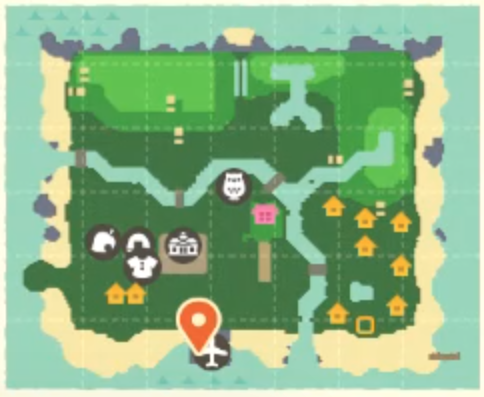
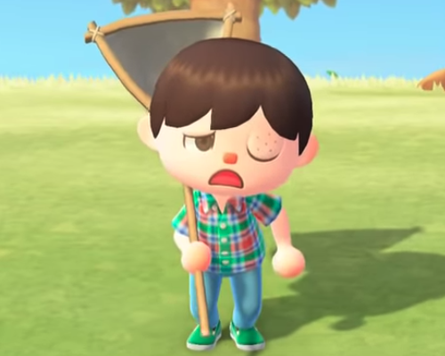

The Fabulous Cube's Blog
Home
Contact Me
How to BOOT Villagers Off Your Island
Created on: May 4th 2020
Get rid of that pesky villager that
REFUSES
to leave your island in a few easy steps.

Tools to Help You Design Your Island
Created on: May 4th 2020
Once you have terraforming unlocked, molding your Island perfectly to your imagination can seem like a daunting task. However, with these two tools it can seem way more manageable!

How to Avoid Getting Stung
Created on: May 4th 2020
Anyone playing living on this island will realize the importance of harvesting resources from trees. From sticks and wood to bells and furniture, you can get loads of items you will need to develop your island! However, the dangers of shaking trees aren't none unless you follow these easy steps!